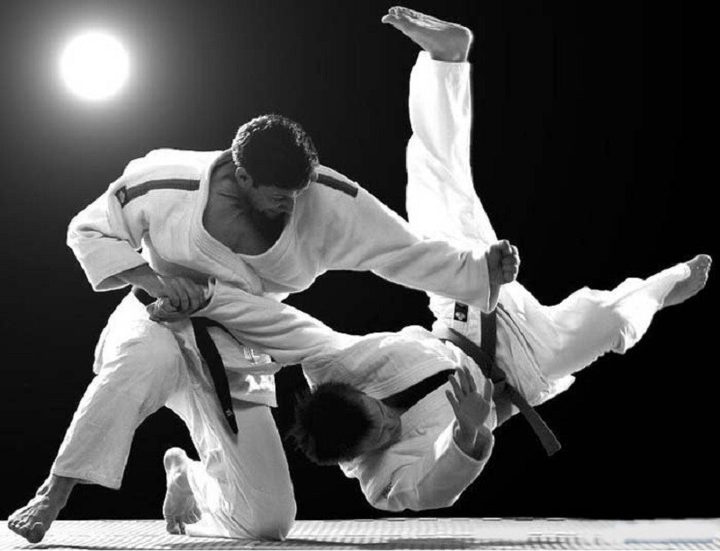
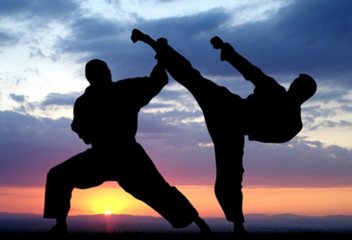

Боевые искуcства мира.Боевые искусства — различные виды единоборств и самозащиты разного происхождения. Развивались, главным образом, как средства ведения рукопашного поединка. В настоящее время практикуются во многих странах мира в основном в виде спортивных упражнений, ставящих своей целью физическое и сознательное совершенствование, и применяются современными армиями. Боевые искусства подразделяются на направления, виды, стили и школы. Есть как довольно старые боевые искусства, так и новые. Многие из них учат медицинским наукам, что особенно касается традиционных китайских боевых искусств, и могут быть связаны с религией и духовностью. Существует большое количество существенно различающихся боевых искусств. Однако их можно разделить на две большие группы: использующие оружие и не использующие приёмы с предметами.
У боевых искусств существует классификация по различным критериям:
В качестве общего наименования для всех боевых искусств и единоборств некоторыми современными авторами используется термин кэмпо. Единоборства имеют как свои недостатки, так и преимущества по отношению к другим боевым искусствам. Но, к сожалению, не все из них подходят для уличных драк. Для таких ситуаций больше подойдут:
|

Список боевых искусств  |